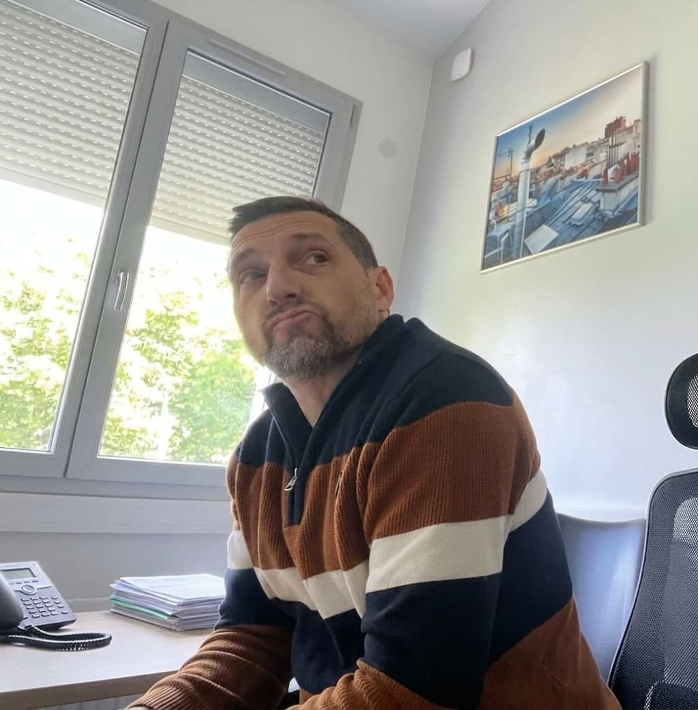
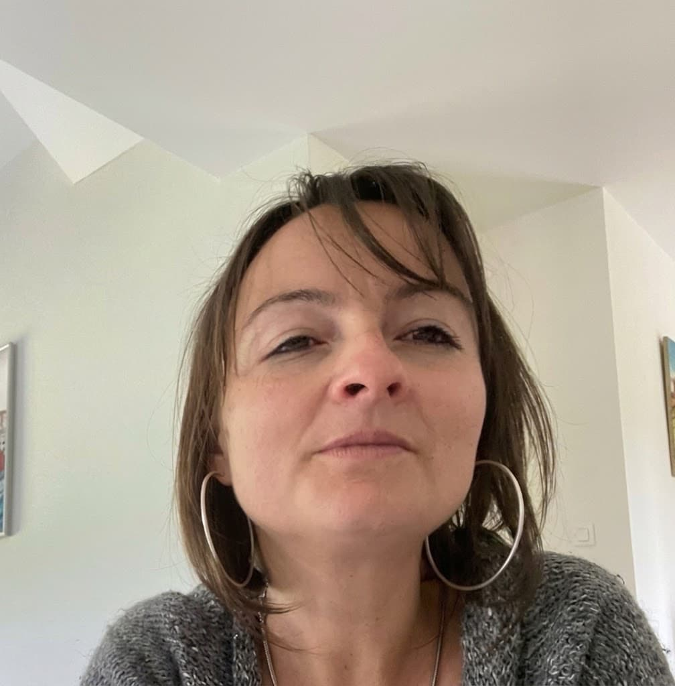

Une expertise construite sur le terrain, depuis 2005, et tenue à jour par des formations continues chaque année.

Plombier/chauffagiste de formation, qui a travaillé pour plusieurs entreprises avant de se mettre à son compte, dont plusieurs années en maintenance (entretiens et dépannages de chaudières fioul, gaz et bois).
« Je suis devenu indépendant en 2005. J'ai d'abord œuvré aussi bien dans le domaine de la plomberie (création ou rénovation sanitaire, dépannages…) que du chauffage (chaudières toutes énergies, poêles, réseau chauffage central, travail du cuivre). Au fil des années j'ai pris goût à l'énergie bois et je suis aujourd'hui spécialiste des moyens de chauffage fonctionnant au bois bûches et granulés (poêles d'appoint, poêles de masse et chaudières). Je suis particulièrement soucieux de toujours mieux maîtriser les règles de l'art. »

Son épouse, à ses côtés pour la partie administrative et pré-chiffrage des projets.
« En travaillant à notre compte nous pouvons développer la relation avec nos clients que nous souhaitons. Avec Matthieu nous prenons plaisir à nous former très régulièrement et maîtriser chaque jour davantage nos connaissances techniques et réglementaires. Je suis aujourd'hui experte à ses côtés, surtout dans la connaissance des textes de référence et dans les calculs de dimensionnement, maniant les logiciels KESA ALADIN (la référence des fabricants de conduits), QC2 et Z1E (développés par C2AP, expert français dans le domaine). »
Nous ne vendons ni poêles ni travaux d'installation dans le cadre de nos expertises — notre diagnostic reste neutre, quel que soit son résultat.
Formations quasi annuelles (AXOP, AGECIC) sur les aspects réglementaires, juridiques et techniques — le détail est sur la page Formations suivies.
Matthieu sur le terrain, la pose et le diagnostic technique ; Marion sur la réglementation et les calculs de dimensionnement — deux regards complémentaires sur chaque dossier.
Consultez le détail de nos expertises ou contactez-nous directement.
Voir nos expertises